Overview
Whenever I reserved rooms for club meetings, I felt it is difficult to find an appropriate room that is available at desired time and date. To further explore on this problem space, I took Product Development & Management course that teaches students how to develop an idea and bring it to life using concepts from product design, product management, and entrepreneurship. With three other students from the course, we completed high fidelity web application prototype over the semester. We named our product as Cornell University Reservation Express, CURE in short.
After the course, I engaged in developing high fidelity mobile application prototype individually.
Role
Web: Product Management, User Research
Mobile: Product Design, Product Management, User Research
Team
Web: 3 Product managers&designers
Mobile: Me
Period
Web: Feb 2019 - Jan 2020
Mobile: Jan 2020 - Feb 2020
Results
Web and mobile application prototype & case study
High Fidelity Prototype for iOS Application
Introduction
| 🔎 Intuitive Interface / Intergrated Instructions & Policies / Novel Communication Channel
Currently, Cornell space reservation system are divided into three different websites which each has various methods of reserving rooms such as sending email, filling out the form, reserving through websites. Various methods and confusion on instructions avoid users to quickly book the space they desire to use at specific date and time. We started asking ourselves questions such as
How might we simplify the current room reservation system with more intuitive interface? How might we integrate instructions and policies? How might we provide a novel channel for communication between staff and student?
Current Solution
| 🖥 R25 / Libcal / Cornell Spaces
To better understand how to improve user's experience with room reservation system, we conducted an analysis on how current space reservation system works. We can notice that they are separated into three websites.
1. R25 https://registrar.cornell.edu/service-resources/r25-event-scheduling
R25 is a website with lists of spaces and forms for request, implemented with a calendar interface.
Pros: It manages most of the rooms at Cornell, thus most frequently visited by the students.
Cons: Policies are scattered for each space and poor interface.
2. Libcal https://spaces.library.cornell.edu/spaces?lid=3403
Libcal is a website with lists of libraries, implemented with a calendar interface.
Pros: For the chosen library, available rooms for every hour are displayed.
Cons: Reservation is limited to the spaces in libraries.
3. Cornell Spaces https://registrar.cornell.edu/spaces
Cornell Spaces is a website containing a table with spaces at Cornell and contact information for each space.
Pros: Handle the largest amount of spaces.
Cons: Only channel for communication is e-mail, which delays the whole process.
User Research & Findings
| ✏️ Streamlined / Automation
1. People want streamlined process
The major difficulty using existing reservation systems is how they are scattered. Users said that finding relevant instructions for a room reservation had required multiple rounds of google search or help from a former manager of the system. Because of such scattered information, users asked for a web or mobile application with improved accessibility. Thus, we confirmed that streamlined room reservation process is the most essential amendment needed.
2. People do not like human interaction throughout the process.
Users stated their preferences for a completely automated room reservation process. Most users lost track while emailing back and forth to a staff member to schedule a reservation. Also, scheduling took a majority of the entire reservation process time depending on how busy staff members are. We found out that seamless process and clear responses of the reservation status are necessary.
3. People value purpose of reservation, capacity, and availability.
Defining The Problem
As an active member of various clubs in Cornell, I want to reserve a space for club activities, but I cannot because current room reservation solutions are difficult to use; instructions and policies are hard to find; and confirmation for the space requests takes too long.
Brainstorming
| 🙋♀️💭 Form / Present all availabilities / Status / Communication channel
First of all, we wrote down and made an affinity diagram on what to improve from the current reservation system:
After exploring, we focused on two objectives:
1. Facilitate reservation process - How can we unify different reservation methods?
2. Develop communication channel - How can we reduce the number of emails to schedule a reservation and keep track the process?
1. Facilitate Reservation Process
Main objective: The reservation process is more defined for users
From the user interviews, we confirmed that users preferred clearly guided forms asking for all the necessary information to emails as a means of reserving room. Our product will have a “form” that will be delivered to the responsible staff member. By combining the contact lists into a unified form on a single website, we seek to provide users with an organized standard webpage.
Inspiration: R25 forms
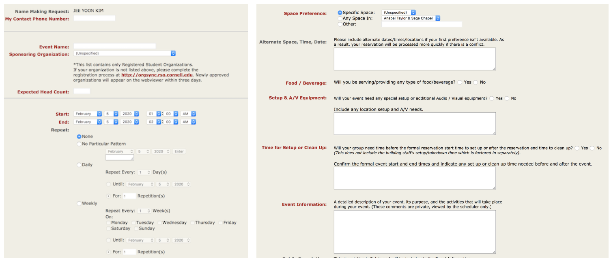2. Develop Communication Channel
Main objective: Users get an understanding about the status of their request
2-1. Provide information on status of room reservation
To prevent from overflowing email communication, our product will present all availabilities like Libcal. Also, each request will have icons indicating its status - for example, “received,” “pending,” and “confirmed”.
Inspiration: Student center, Libcal, status bar like Dominos and Grubhub. Cornell Student Center marks the course status with either a green circle or a blue box. Libcal shows the availability by every hour with green, yellow, and red squares.
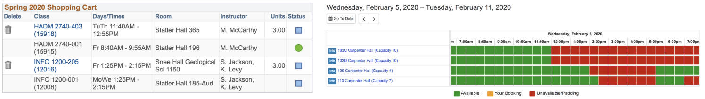 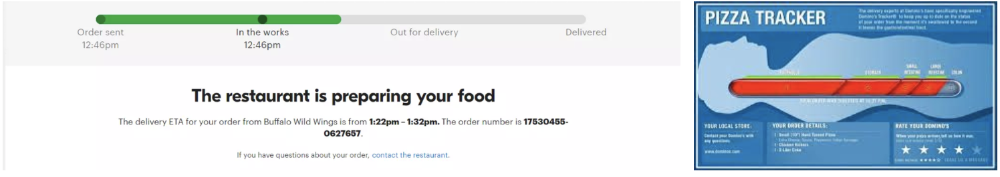2-2. New communication channel between staffs and users
Instead of email, new channel like chatbot or direct message system will be incorporated within the website.
Inspiration: Slack, Instagram Direct Messages
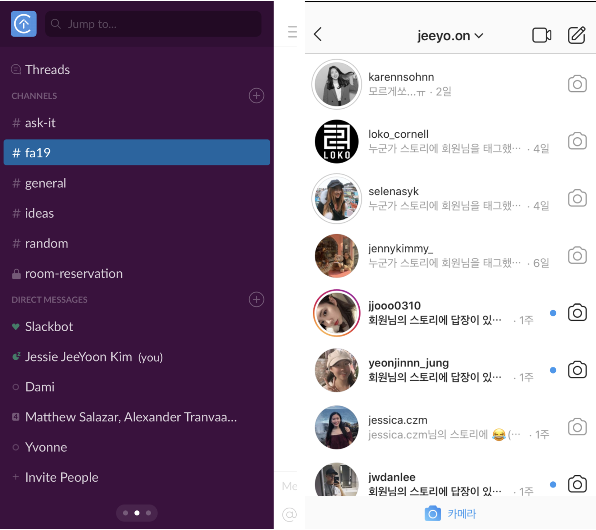Web: High Fidelity Design Explorations
1. Forms
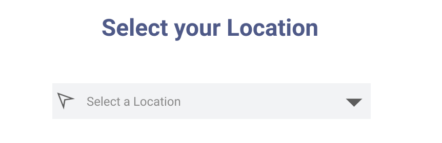 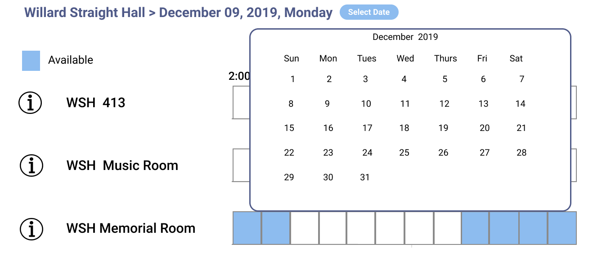We made a significant change on user flow of the form. Originally, the form included everything such as basic information, location, date, and time. It showed availabilities of spaces after the form had been submitted. However, during the user testing, we found out that users prioritize locations and date more than time. To be specific, users were more flexible with changing their reservation time depending on the availabilities. We decided to remove time from the form and display it along with availabilities on the next page. In this manner, users can view more space options when searching rooms for specific location and desired date.
As a result, we redistributed form elements in the order of select location → select date → select time/availability → submit basic information.
2. Availability/Time
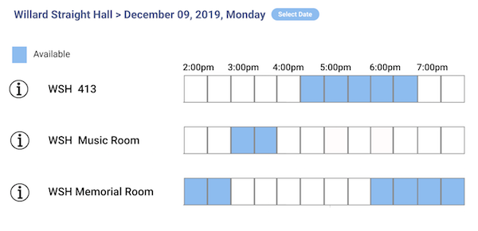We merged availability and time elements in order to emphasize clear representation of the availabilities. It displays unoccupied time with different colors similar to Libcal Cornell.
High Fidelity Web Application Prototype
🙌🏻 After The Course, Individual Project 🙌🏻
Mobile: High Fidelity Design Explorations
1. Location Selection
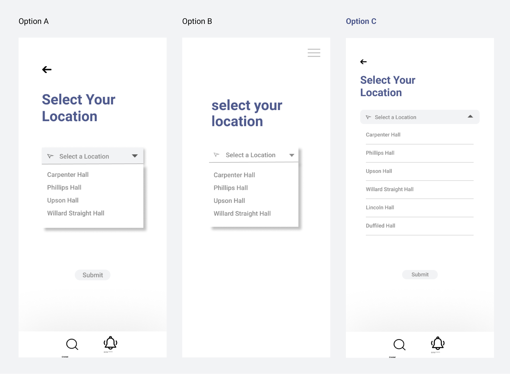Initially, I followed the basic frame of the web application and developed two different versions: Option A and B. However, I listed out the locations as shown in Option C in order to utilize more vertical spaces rather than to cram information in a small box.
2. Availability Bar
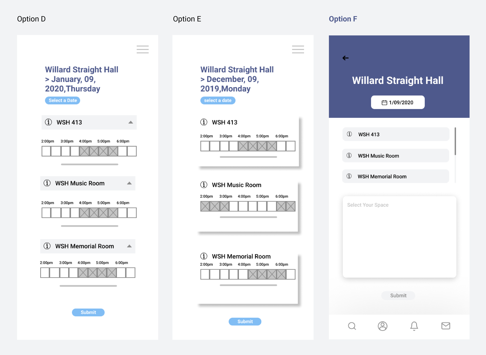I started off with the same design as web application and came up with Option D and E. However, the structure on a mobile device was overwhelming because of overlapping availability bar for every location. Thus, I created separate section for the lists of spaces and availability bar, which is shown as Option F.
3. Form
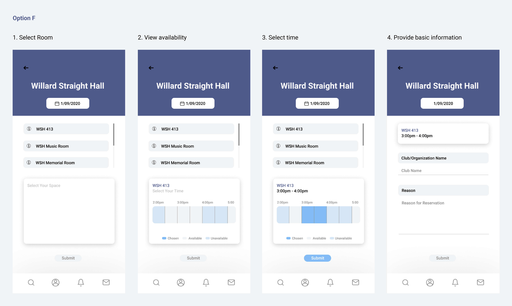Steps for reserving space remain same as the web application: Select room → View availability → Select time → provide basic information. Once the room is chosen, availability bar appears. When different room is chosen, options on the availability bar changes. In this manner, users are allowed to stream locations and check the availability in one screen.
4. List of Availability

After the user testings for Option F, I realized that users are confused with the structure. Most of the users did not recognize the instruction and not clicked the lists of locations. They instead focused on ‘Select Your Space’ message at first. Reflecting on the user feedback, I chose Option H as my final prototype.
5. Select Date
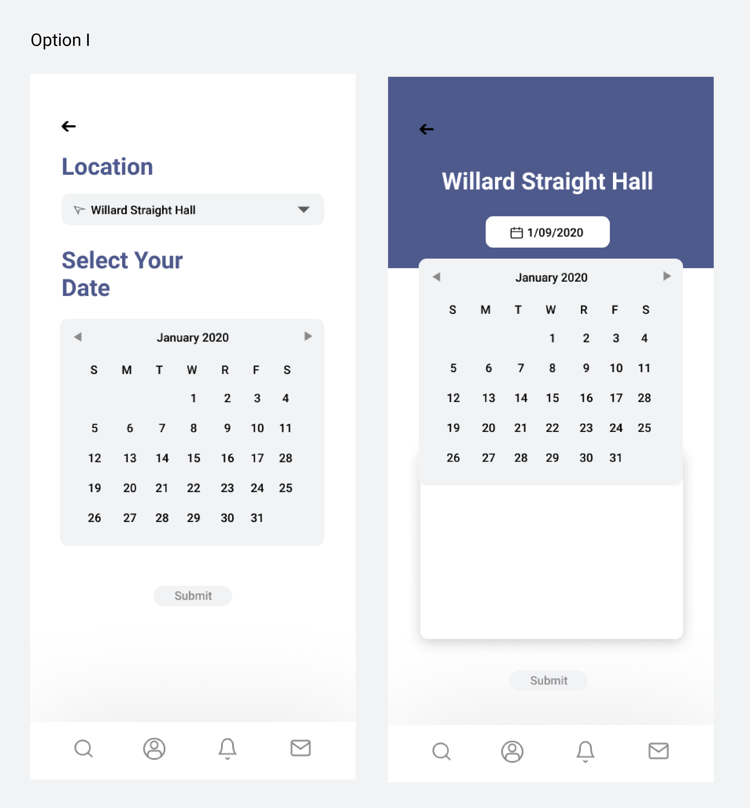 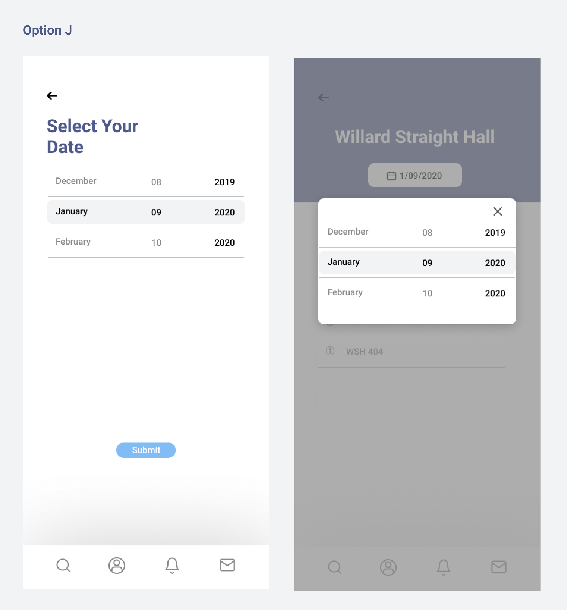I chose option J over option I in order to reduce restrictions on horizontal width. Option I had difficulty on clicking dates on mobile device screen.
6. Status Bar
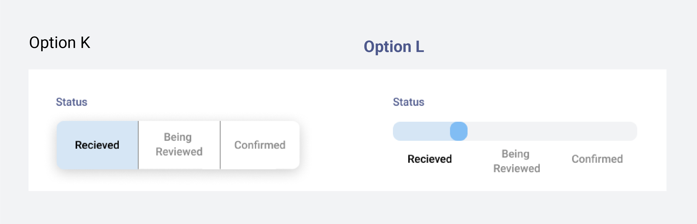Option K has consistent design with the availability bar. However, I chose option L which is closer to the standard of status bar, like what Dominos has.
7. Messages
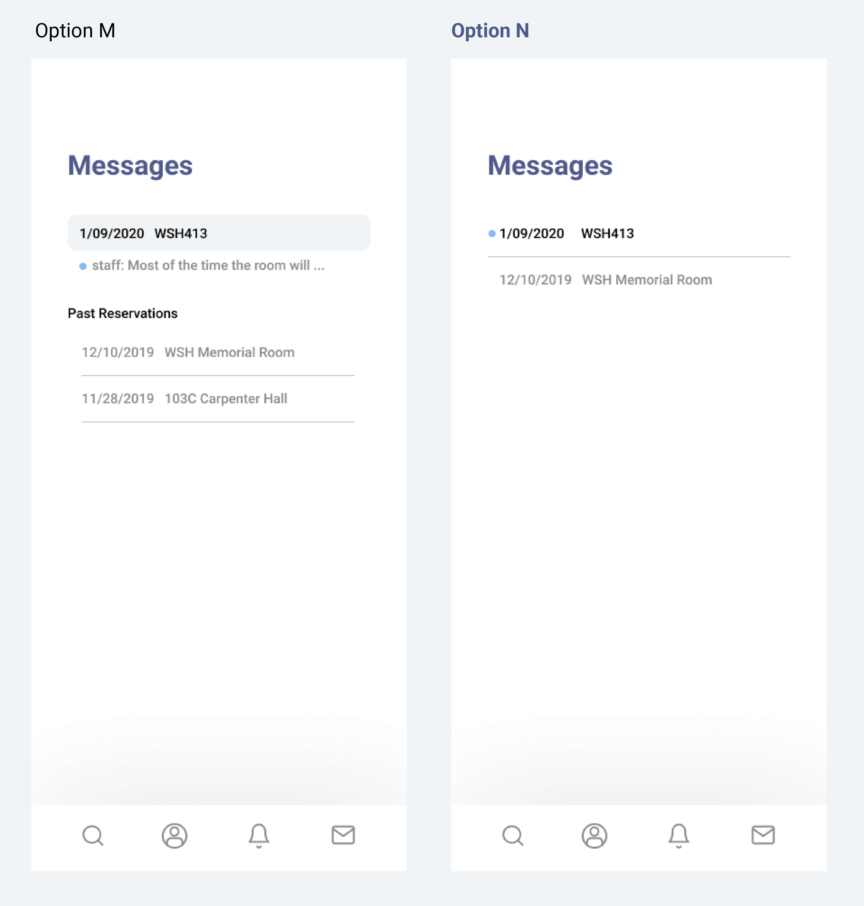Option M has a preview of messages and divides current and past reservations while Option N is a list. However, I considered past reservations label unnecessary because this screen is for messages. Also, during user testing, some users had confusion on where to click to view the new message. Thus, I used option N.
High Fidelity Prototype for iOS Application